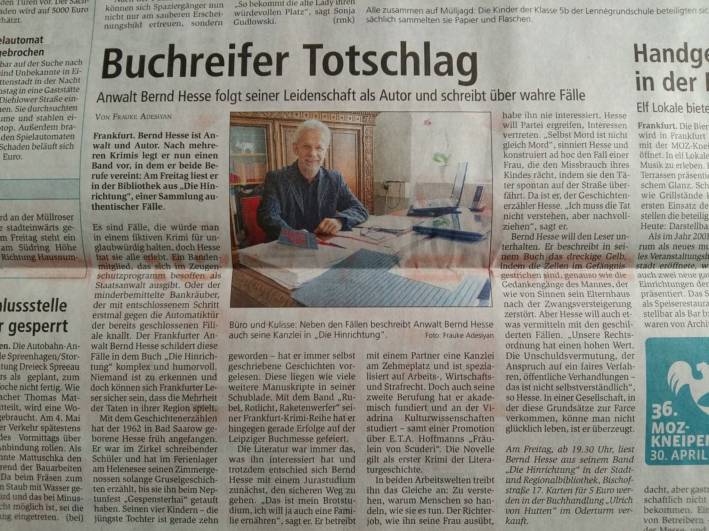
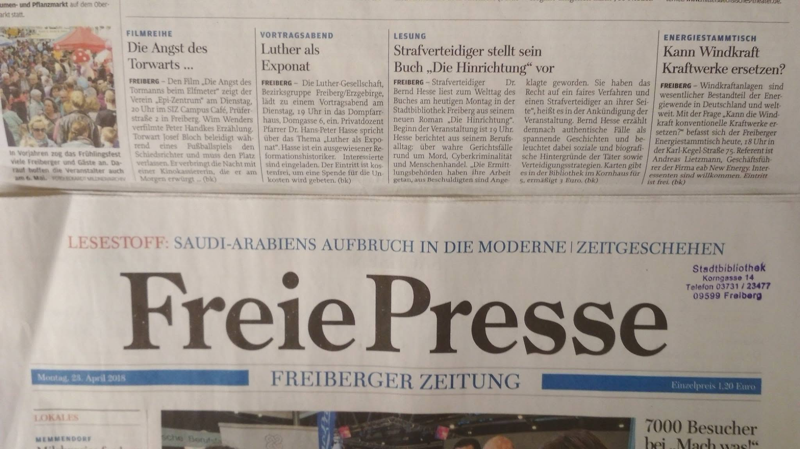
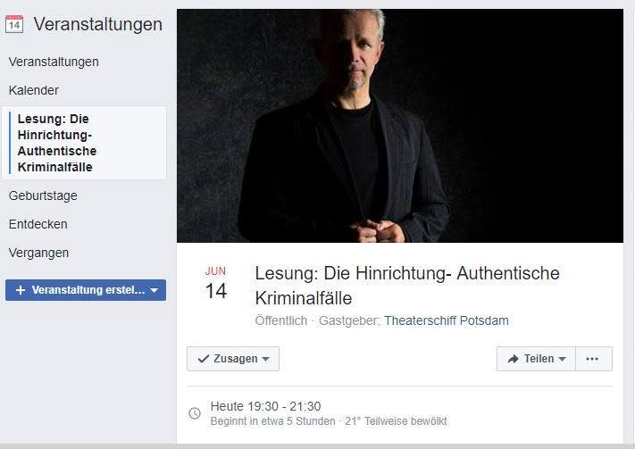
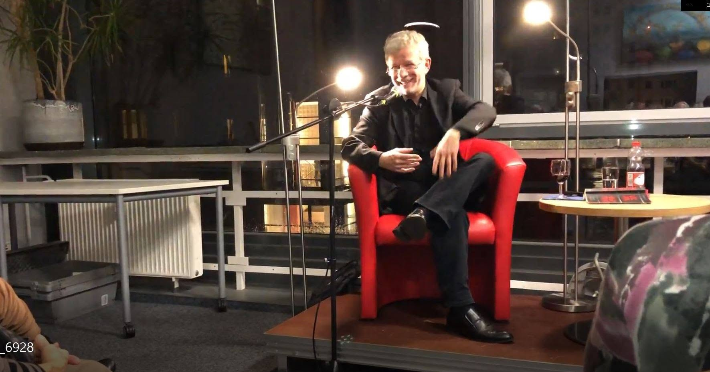
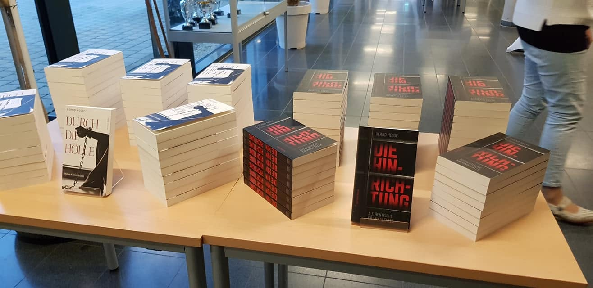
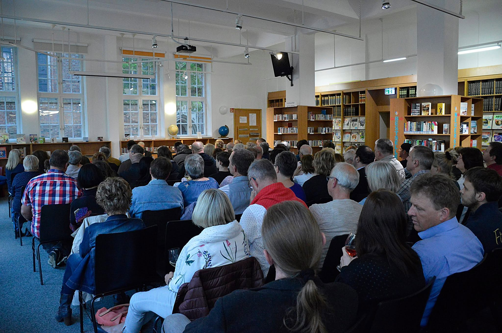
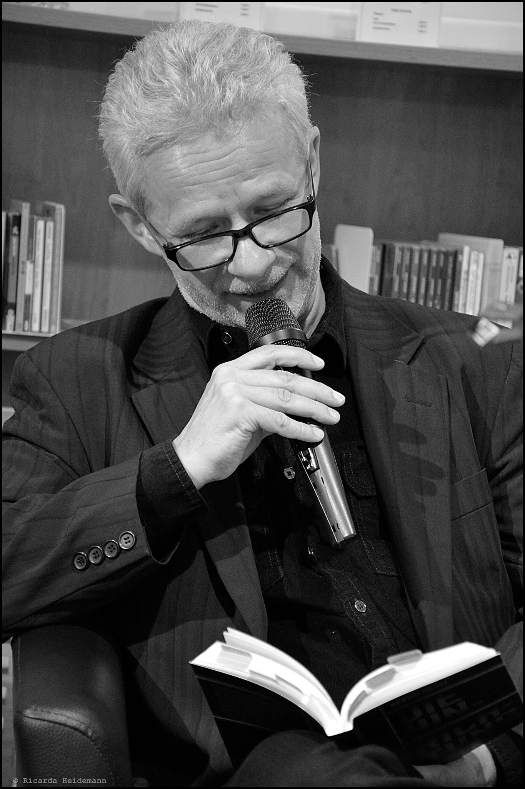
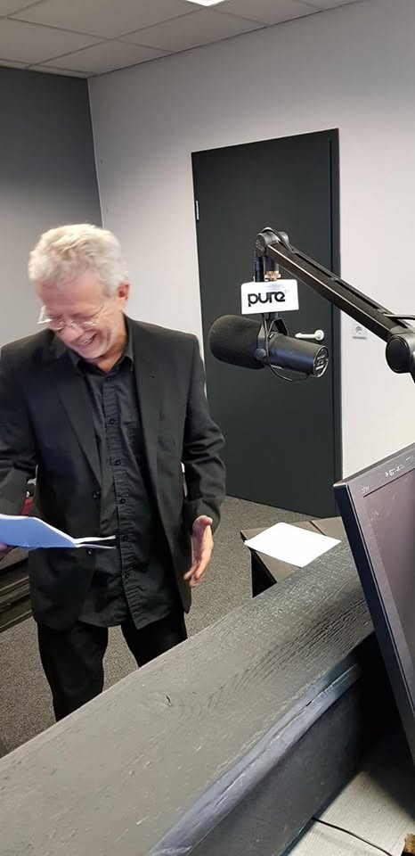
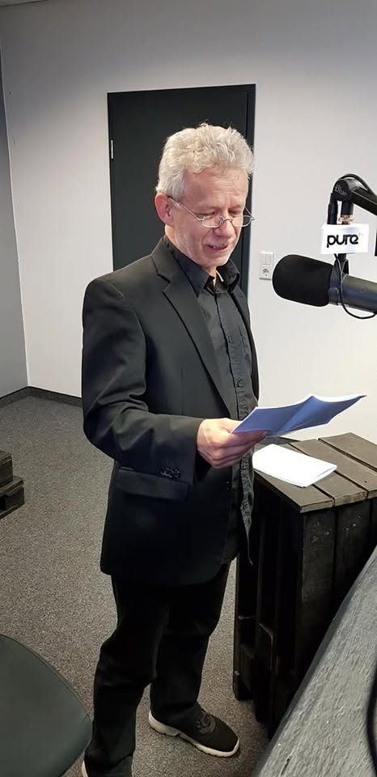

Die Hinrichtung
Authentische Kriminalfälle
Bernd Hesse
Die Hinrichtung – Authentische Kriminalfälle
Verlag Das Neue Berlin, Berlin 2018
Mit Die Hinrichtung begann Bernd Hesses Reihe über authentische Kriminalfälle. Im Mittelpunkt stehen Verfahren, die er als Strafverteidiger erlebt und begleitet hat. Dabei geht es nicht allein um die Straftat selbst. Erzählt wird auch davon, was nach einer Festnahme geschieht, wie Ermittlungen geführt werden, welche Bedeutung Akten, Zeugenaussagen und Sachverständige gewinnen und wie sich ein Fall im Gerichtssaal mitunter ganz anders darstellt, als es zu Beginn den Anschein hatte.
Der Blick des Strafverteidigers führt unmittelbar in die Welt der Untersuchungshaft, der Vernehmungen und Hauptverhandlungen. Juristische Zusammenhänge werden dabei nicht abstrakt erläutert, sondern entstehen aus den konkreten Geschichten und den Menschen, die an ihnen beteiligt sind.
Ernstes und Tragisches stehen neben grotesken, absurden und bisweilen komischen Situationen, wie sie gerade im Gerichtsalltag immer wieder vorkommen.
Der titelgebende Fall
Im Fall „Die Hinrichtung“ begegnet der Strafverteidiger einem früheren Mandanten wieder, der schließlich in ein Zeugenschutzprogramm aufgenommen wird. Ausgangspunkt ist ein Mord, der wie eine Hinrichtung erscheint. Die Tatwaffe wird bei dem Mandanten gefunden, weitere Spuren belasten ihn erheblich. Vieles scheint zunächst auf einen eindeutigen Geschehensablauf hinzudeuten.
Erst im Verlauf der Verteidigung entsteht ein anderes Bild. Die Frage nach dem tatsächlichen Täter verbindet sich mit den Gefahren einer Aussage gegen frühere Mittäter, der Kronzeugenregelung und schließlich dem Zeugenschutz. Gerade dieser Fall zeigt, dass der wahrscheinlichste Tatablauf nicht immer derjenige sein muss, der sich am Ende eines Strafverfahrens als richtig erweist.
Sieben authentische Kriminalfälle
Auch die weiteren Geschichten führen in sehr unterschiedliche Bereiche des Strafrechts und menschlicher Abgründe. Sie erzählen unter anderem von einer grausamen Gewalttat und den Fragen psychiatrischer Begutachtung, von Gier und groß angelegter Wirtschaftskriminalität, von einem geradezu dilettantischen Banküberfall, von Brandstiftung sowie von internationalem Menschenhandel und einer Reise, die für eine schwer erkrankte Frau und andere Opfer tödlich endet.
Die Fälle werden nicht aus der Distanz eines Beobachters erzählt. Sie entstehen aus der anwaltlichen Praxis und führen deshalb immer wieder dorthin, wo eine Kriminalgeschichte für den Leser scheinbar bereits beendet ist, für den Strafverteidiger aber häufig erst beginnt.
Das Buch in der Öffentlichkeit
Nach dem Erscheinen wurde Die Hinrichtung in Zeitungen vorgestellt, besprochen und empfohlen. Neben allgemeinen Artikeln über Buch und Autor erschienen auch ausführlichere Rezensionen.

Lesungen
Zahlreiche Lesungen führten das Buch anschließend an sehr unterschiedliche Orte. Dazu gehörten Bibliotheken, Literaturveranstaltungen und die Leipziger Buchmesse ebenso wie Veranstaltungen in Berlin und Brandenburg.




Lesungen in der Stadtbibliothek Frankfurt (Oder)


Krimi-Marathon und Polizeihistorisches Museum Berlin
Auch beim Berliner Krimi-Marathon wurde aus Die Hinrichtung gelesen. Eine der Veranstaltungen führte in das Polizeihistorische Museum in Berlin.
Vom Radio zur Hörproduktion
Eine besondere Rolle spielte der Rundfunk. Zunächst las Bernd Hesse beim Berliner Radiosender Pure FM aus dem Buch. Später entwickelte sich daraus eine weitere akustische Umsetzung des Stoffes.
Aufnahmen im Studio
Bei den Aufnahmen zeigte sich zugleich eine andere Seite der Arbeit mit den Geschichten. Auch bei einem ernsten und teilweise bedrückenden Stoff gibt es im Studio Situationen, in denen die Beteiligten miteinander lachen müssen.


Das Hörbuch
Schließlich entstand eine Hörbuchfassung von Die Hinrichtung. Bernd Hesse sprach das Buch selbst ein. Damit führte der Weg vom gedruckten Buch über Lesungen und Rundfunk bis zum gesprochenen Wort.